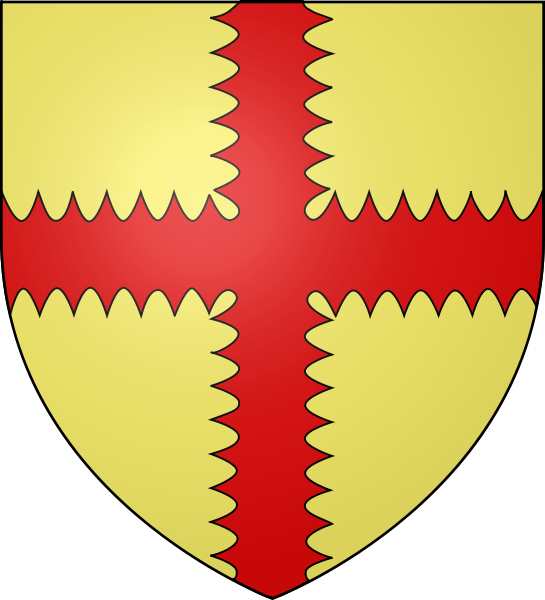

Réunion du Conseil Municipal des Jeunes
La date, le lieu et l'ordre du jour seront ajoutés ici.

CMJACTUALITÉS
Réunions, événements, sorties, décisions et réalisations du Conseil Municipal des Jeunes.
La date, le lieu et l'ordre du jour seront ajoutés ici.
Cette page pourra accueillir des photos, des comptes rendus et les dernières nouvelles.